Los hooks son funciones de React que permiten a un
componente funcional usar estado, efectos y otras
características de React sin escribir clases. Se llaman siempre al
inicio del componente y empiezan con use.
Guarda un valor que, al cambiar, vuelve a renderizar el componente. Devuelve el valor y la función para actualizarlo.
Ejecuta código después del renderizado: cargar datos, suscribirse a eventos o sincronizar con algo externo. Puede devolver una función de limpieza y recibe un arreglo de dependencias.
Lee un contexto compartido (por ejemplo el usuario o el tema) sin pasar props por cada nivel del árbol de componentes.
Guarda una referencia que persiste entre renderizados sin provocar uno nuevo; sirve para acceder a elementos del DOM.
Maneja estado complejo con una función reducer que recibe el estado actual y una acción, y devuelve el nuevo estado.
useCallback memoriza una función y
useMemo memoriza el resultado de un cálculo, para
evitar repetirlos en cada renderizado si sus dependencias no
cambian.
function Contador() {
const [n, setN] = useState(0);
useEffect(() => {
document.title = `Clics: ${n}`;
}, [n]); // se ejecuta cuando cambia n
return <button onClick={() => setN(n +
1)}>{n}</button>;
}
Reglas de los hooks: se llaman solo en el nivel superior del componente (no dentro de condicionales ni bucles) y solo desde componentes o desde otros hooks.
Un hook personalizado es una función propia cuyo
nombre empieza con use y que combina otros hooks para
reutilizar lógica entre componentes, por ejemplo
leer un dato guardado o escuchar un evento.
function useContadorGuardado(clave) {
const [valor, setValor] = useState(() =>
Number(localStorage.getItem(clave)) ||
0
);
useEffect(() => {
localStorage.setItem(clave,
String(valor));
}, [clave, valor]);
return [valor, setValor];
}
Durante la sesión teórica también se resolvió una de las prácticas del ing. Aguilar. Dejo el video donde muestro lo que desarrollé.
El parcial se desarrolló en equipos de hasta 4 estudiantes, con React, Vite y TypeScript y una duración de 85 minutos. El caso fue un Sistema de Gestión de Biblioteca Universitaria, con administradores y usuarios registrados (estudiantes o docentes), y toda la información guardada en Local Storage, sin base de datos externa.
Registro, edición y eliminación, con formularios validados. 6 pts
Registro validado, sin códigos universitarios duplicados. 4 pts
Búsqueda, solicitud y control de stock. 4 pts
Código único, fechas y descarga en PDF. 3 pts
Préstamos activos y devueltos con React Router. 3 pts
En el reparto del trabajo me encargué del módulo de usuarios y sesión, que alimenta al resto de la aplicación:
Formulario con nombres, código universitario, correo y tipo (Estudiante o Docente). Normaliza los datos, valida el formato del correo y rechaza códigos duplicados.
Permite cambiar entre modo Administrador y Usuario, elegir qué usuario está activo y guardar la sesión en Local Storage.
useSession
Combina useState y useEffect para
que cualquier componente lea la sesión actual y se actualice
cuando esta cambia, limpiando los listeners al desmontarse.
export function useSession() {
const [session, updateSession] =
useState(getSession);
useEffect(() => {
const refresh = () =>
updateSession(getSession());
window.addEventListener(SESSION_CHANGED,
refresh);
window.addEventListener('storage',
refresh);
return () => {
window.removeEventListener(SESSION_CHANGED,
refresh);
window.removeEventListener('storage',
refresh);
};
}, []);
return session;
}
El repositorio incluye 2 pruebas automatizadas
(tests/library.test.mjs) que cubren el registro, el
préstamo, el comprobante en PDF, la devolución y la persistencia en
Local Storage.
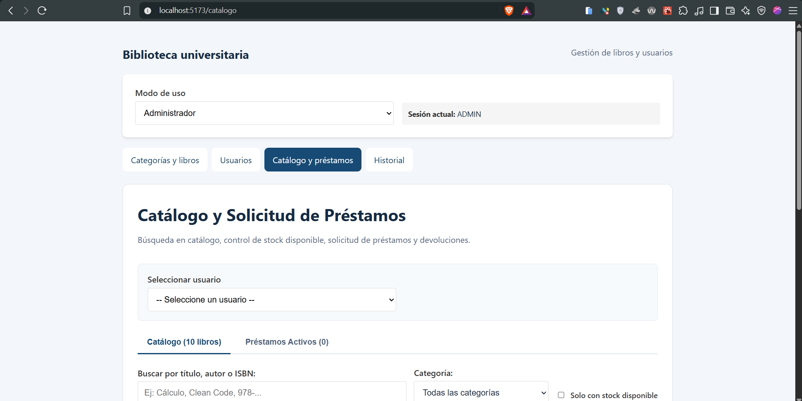
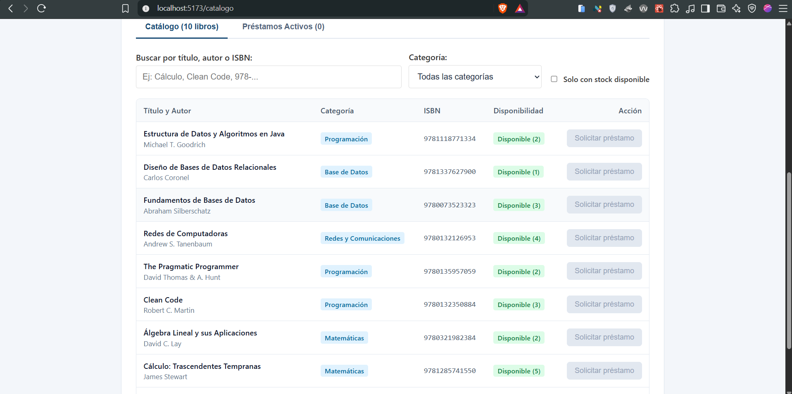
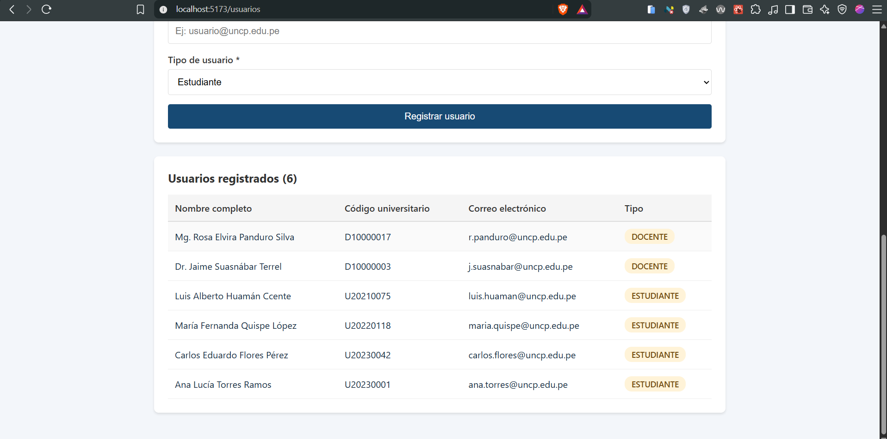
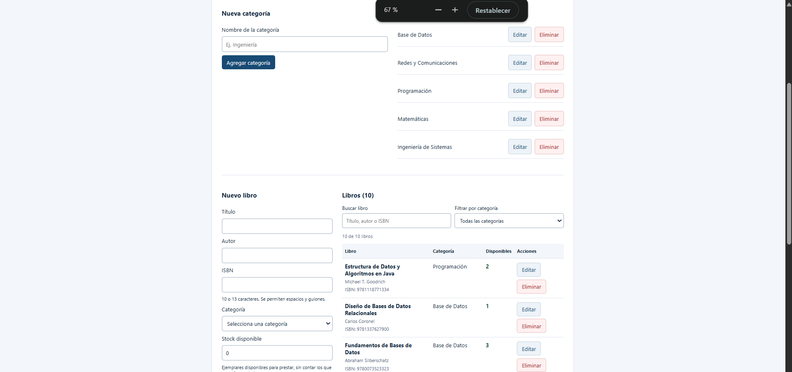
En el Laboratorio 06: uso de hooks se aplicaron los hooks de la teoría y se rindieron dos pruebas de laboratorio.
Manejo de estado con useState y ejecución de efectos
con useEffect.
Uso de hooks adicionales para compartir datos, referenciar elementos y optimizar el renderizado.
Dos ejercicios evaluados en la sesión, con sus capturas como evidencia.
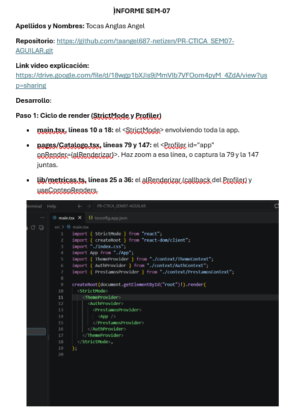
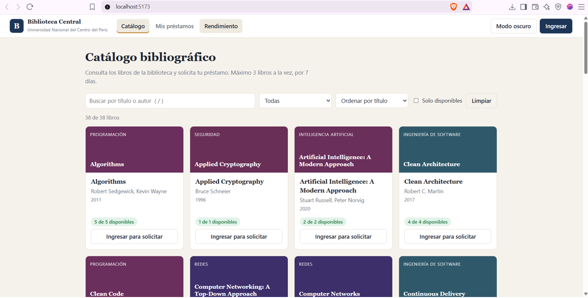
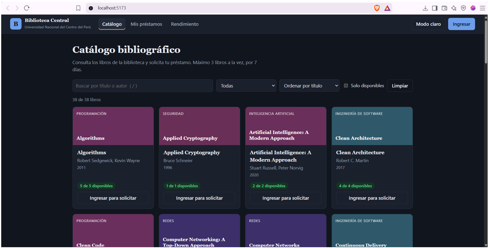
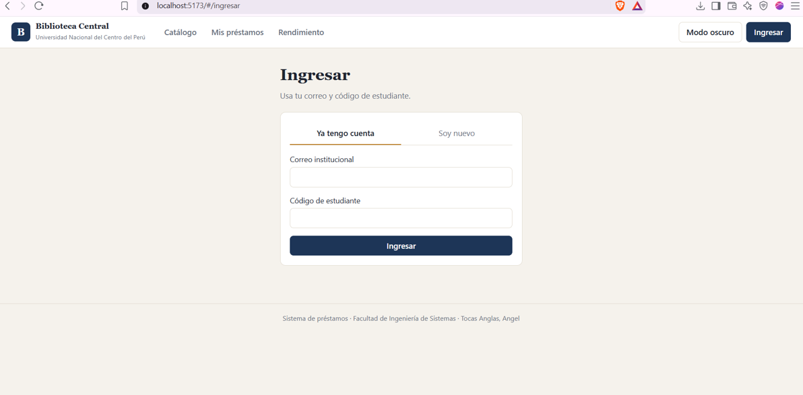
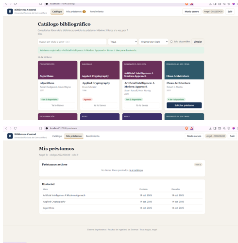
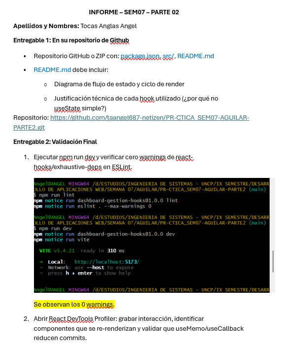
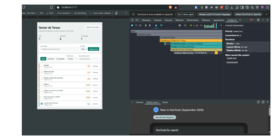
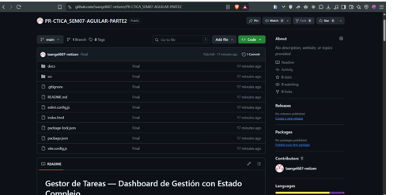
Aprendí qué es cada hook de React y cuándo usarlo, y cómo crear mis propios hooks para reutilizar lógica. También viví cómo se integra todo en una aplicación completa con React, TypeScript y Local Storage.
Con la teoría del docente, las dos pruebas del laboratorio y el parcial en equipo, donde tuve que usar hooks en un problema real y coordinarme con mis compañeros por módulos.
Para escribir componentes que manejan estado y datos de forma
ordenada, y para no repetir código: un hook como
useSession lo usan varios componentes a la vez.
Manejar las dependencias de useEffect y limpiar los
listeners para evitar fugas, además del poco tiempo (85 minutos) y
la integración de los módulos del equipo.
Separando la lógica en servicios y en un hook propio, dividiendo el trabajo por módulos con mi equipo y revisando cada integración antes de unirla.
En mis proyectos fullstack con React, creando hooks propios para la sesión y el consumo de datos, y como base para las siguientes semanas del curso.